Zakaz.ua — food tech that offers collection and timely product delivery from large supermarkets.
Zakaz.ua — food tech that offers collection and timely product delivery from large supermarkets.
Let’s look at possible operator and financier workflows to understand the task.
In a nutshell, it may look this way:
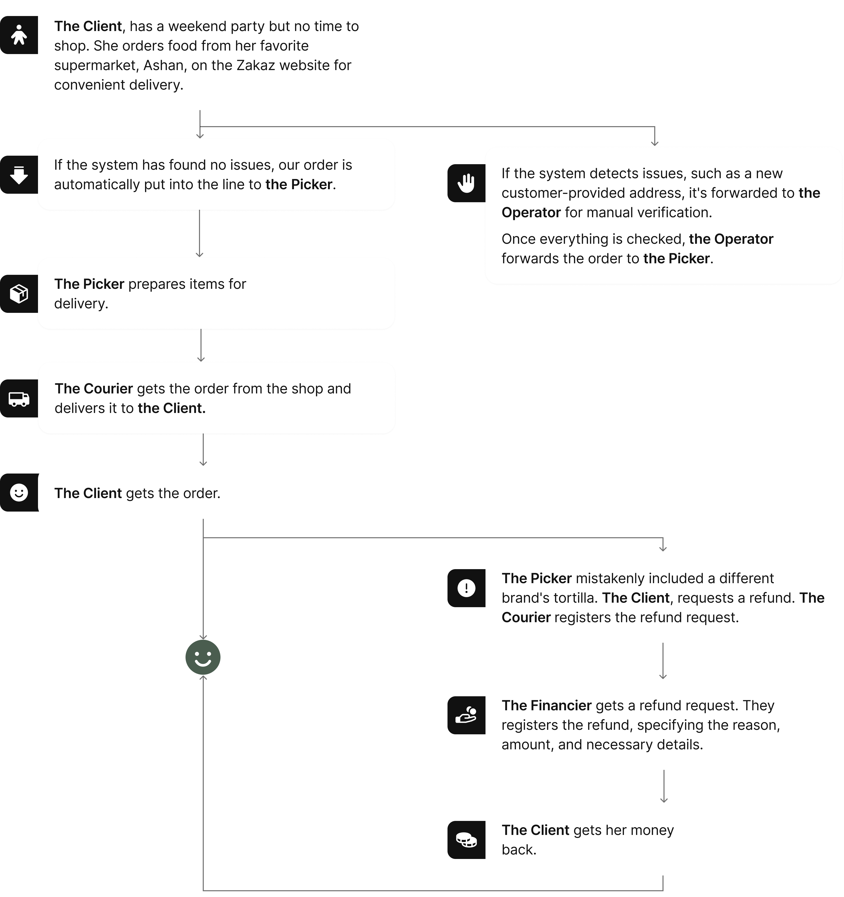
Both roles do all of this inside the ERP — the corporate system that runs accounting and management.
The client came with a list of problems to solve in the interface.
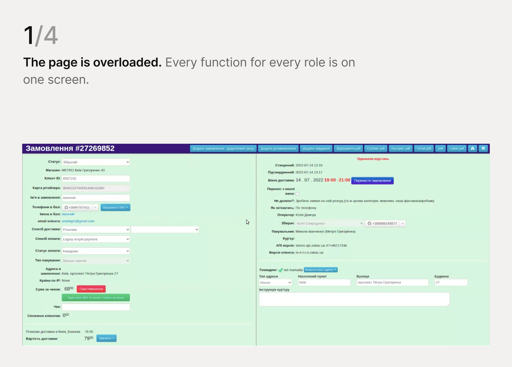
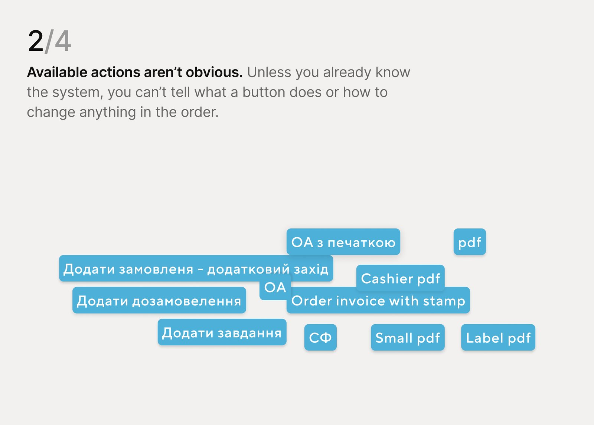
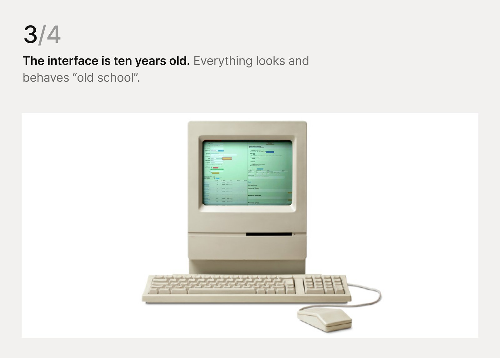
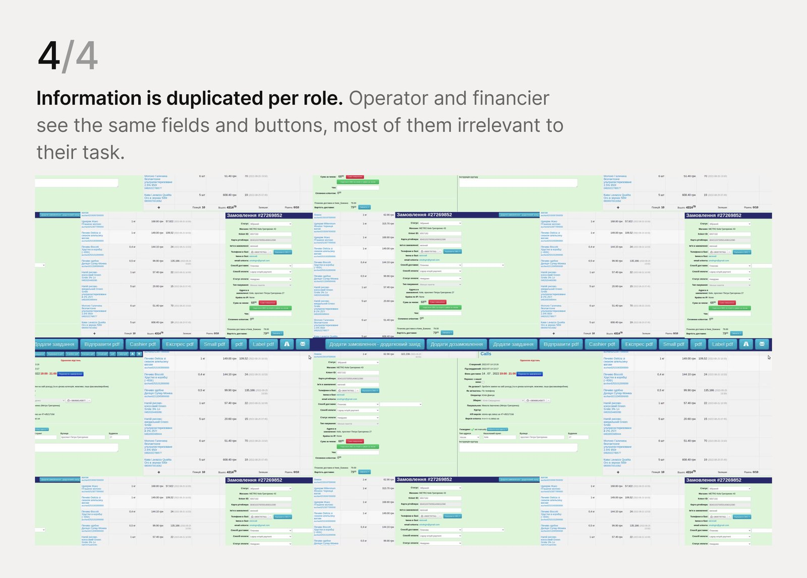
Redesign the interface:
I used Object-Oriented UX to map the system’s objects — their classes, data types, values, and what each role can do with them — for a comprehensive overview.
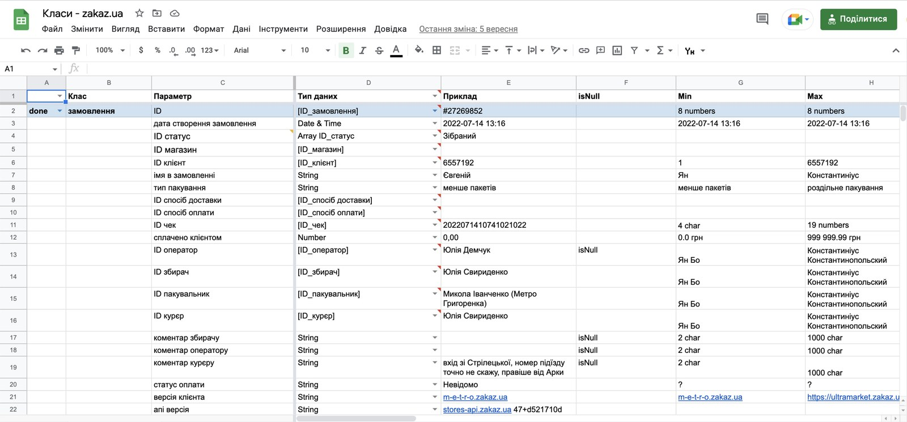
I talked with an operator and a financier to understand their flows and the tasks they complete in the system.
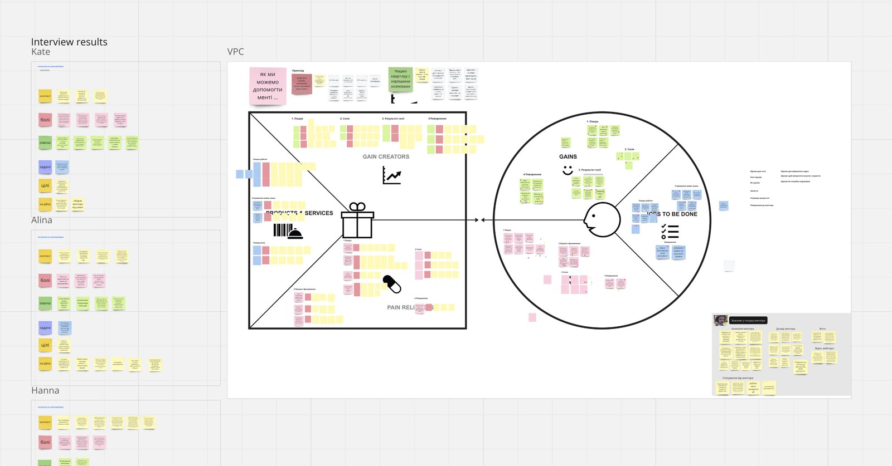
The diagram is divided into 3 parts: placing an order, processing an order, delivery.
The roles that were taken into account: client, operator, courier, picker, financier, system.
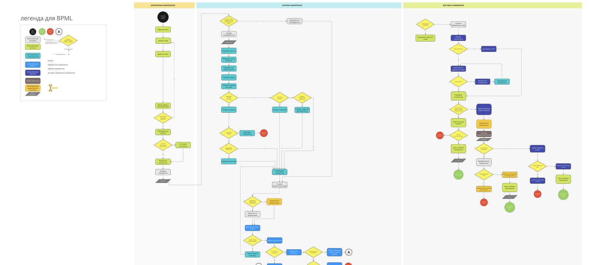
From the flow diagram and the OO UX grid I wrote the features up as user stories.
After going through the technical limitations with the developers, I moved on to mockups and a prototype.
The visual concept took its cues from the Zakaz.ua customer site, so the look and feel stayed consistent.
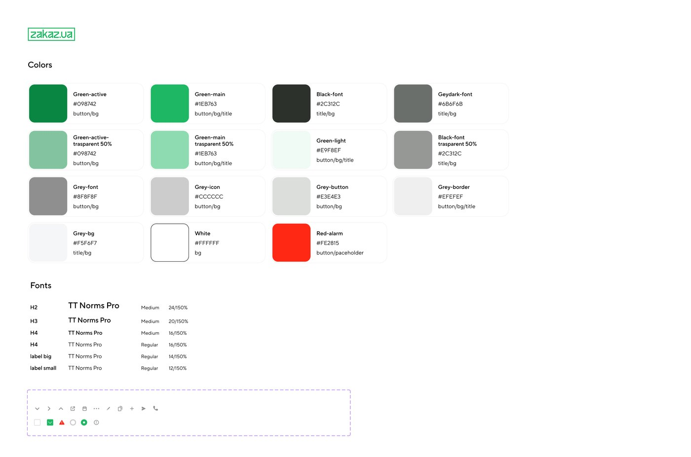
Heuristic analysis was performed to validate design solutions.
At this stage of the project, this method of validation is very convenient and effective because it is easy to perform, does not require additional resources, and gives effective results, which are described in the reports.
The first tab is the order itself — client, delivery, and the tasks and warnings attached to it: everything an operator needs while processing, including a way to contact the client.
1The page is split into three tabs for easier navigation.
2Warnings sit first and in red. Hovering one explains what to do, which shortens the learning curve.
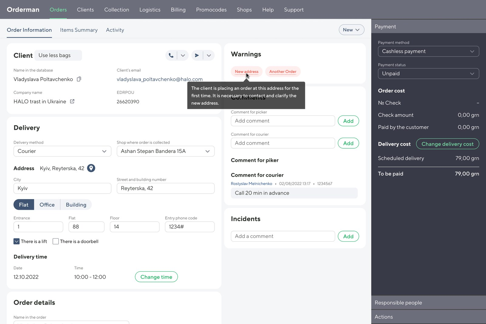
1233Comments often come up mid-call — the operator leaves them for the picker or the courier without leaving the tab.
The Items summary tab holds everything about what is in the order. Search was added so an operator can find an item quickly — an order can run to dozens of lines.
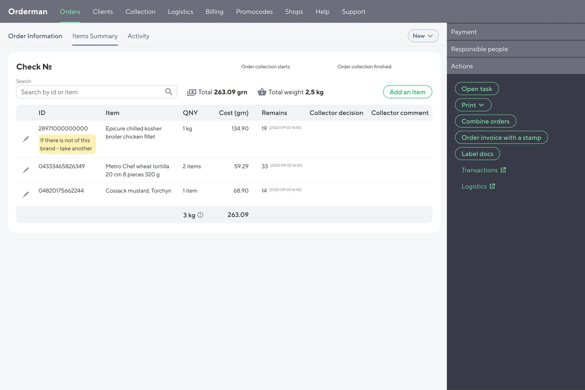
11An operator can edit items in the list — add, delete or change the quantity.
The last tab, Activity, holds the order’s full history — system logs and comments.
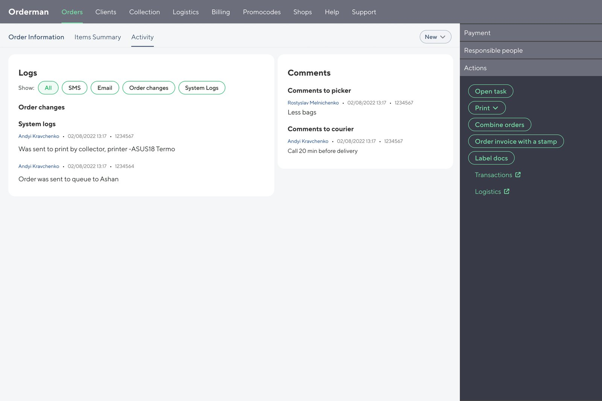
11Filters narrow the log to the entries an operator is looking for.
1Order status can be changed at any moment from the header — it is on every tab.
2The sidebar keeps payment, responsible people and actions one click away on every tab.
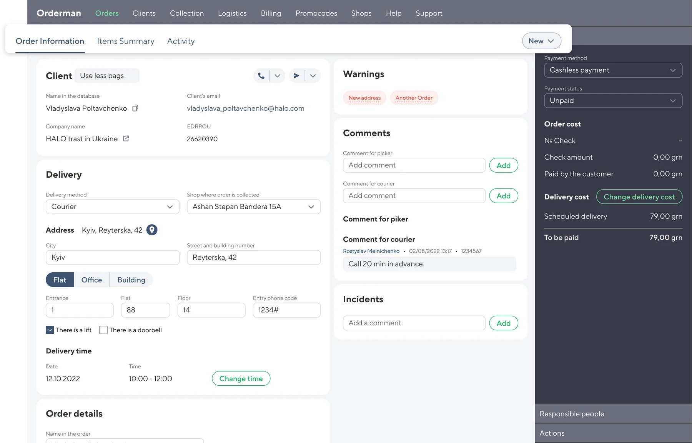
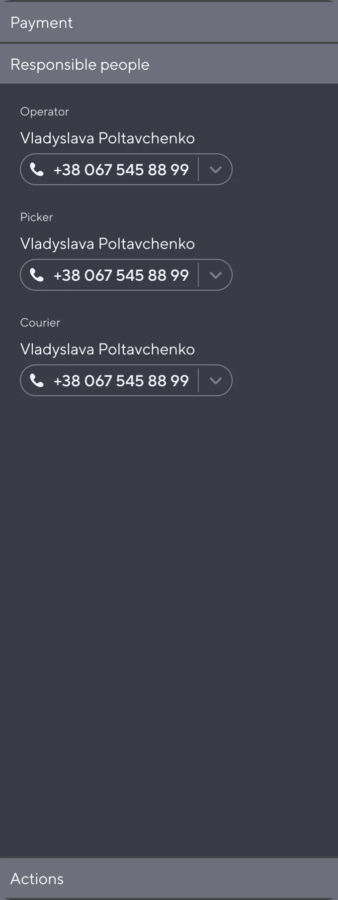
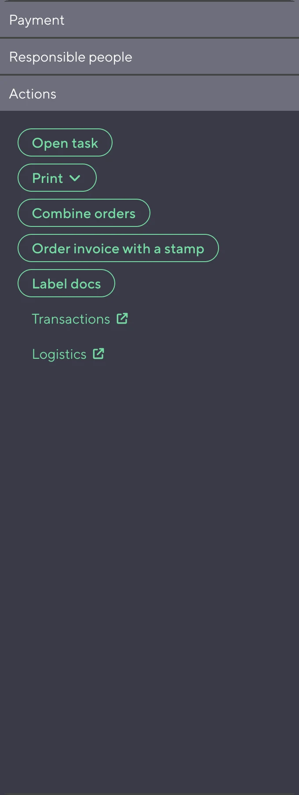
3Confusing action labels were one of the client’s complaints — after an audit they were renamed in plain words.
The previous order page was overloaded with elements and actions a financier never needs. Using the OO UX map, the workflows and the interviews, the financier’s order page was cut down to the features their tasks require.
I analysed the problem, built a design concept, validated it with heuristic analysis and then tested it with users. Everything was presented to and discussed with the client, and the design got a good response. The next steps were design detail and implementation.